🌍 Urban Heat Island & Air Quality Analysis
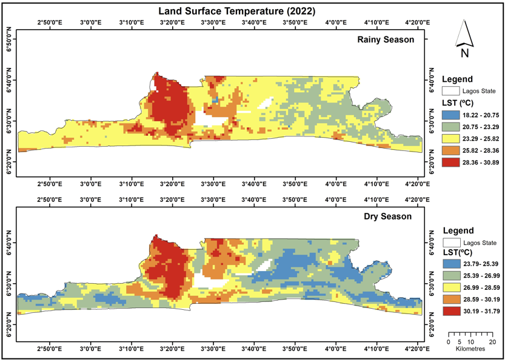
Overview
This MSc research project investigated the spatial and temporal relationship between Urban Heat Island (UHI) intensity, land surface temperature (LST), nitrogen dioxide (NO₂), land use/land cover (LULC) change, and population exposure across Lagos State, Nigeria.
Using satellite remote sensing and Geographic Information Systems (GIS), I developed a reproducible workflow to analyse a decade (2013–2022) of environmental change. The project integrated Earth Observation datasets from NASA and USGS with GIS analysis and statistical techniques to identify environmental hotspots and support evidence-based urban planning.
Study Area: Lagos State, Nigeria
Duration: January 2013 – December 2022
Role: MSc Research Project (University of Aberdeen)
Status: Completed
Methods & Tools
Data Sources
| Dataset | Source | Purpose |
|---|---|---|
| MODIS Aqua (MYD11A2) | NASA Earthdata | Land Surface Temperature |
| OMI Aura | NASA Earthdata | Tropospheric NO₂ |
| Landsat 8 | USGS | Land Use / Land Cover Classification |
| GRID3 Population | GRID3 | Population Exposure |
| Lagos Boundary | GADM | Study Area |
Processing Workflow
- Downloaded MODIS, Landsat and NO₂ satellite datasets.
- Pre-processed imagery using ArcGIS Pro and Python.
- Filled missing raster values using Focal Statistics.
- Generated seasonal and annual Land Surface Temperature maps.
- Analysed NO₂ concentration patterns.
- Produced Land Use/Land Cover classifications.
- Performed Pearson correlation analysis between LST and NO₂.
- Combined environmental indicators with population data to identify high-risk communities.
Tools Used
| Tool | Purpose |
|---|---|
| ArcGIS Pro | Raster processing, spatial analysis and cartography |
| Python | Data automation and statistical analysis |
| ArcPy | Raster geoprocessing |
| SPSS | Correlation analysis |
| Microsoft Excel | Data preparation |
| MODIS & Landsat | Earth Observation datasets |
Environment Setup
import os
import arcpy
from arcpy.sa import *
from arcpy.ia import *
import pandas as pd
import matplotlib.pyplot as plt
Study Area
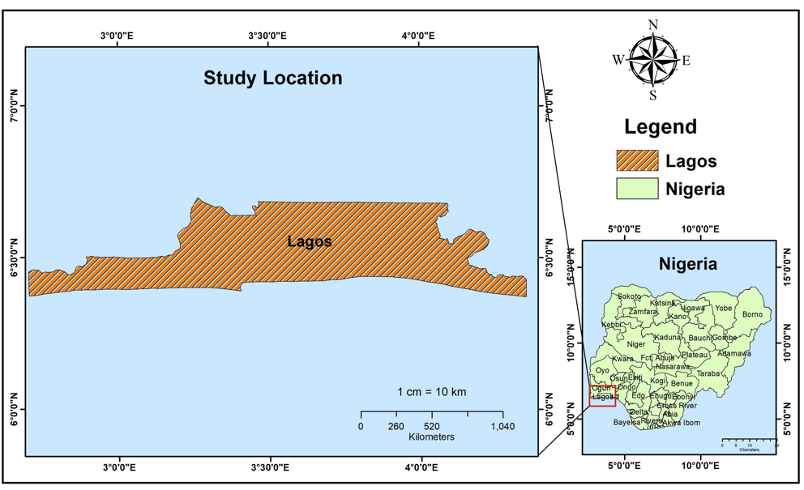
The study focused on Lagos State, Nigeria, one of Africa's fastest-growing metropolitan regions. Rapid urbanisation, industrial development and population growth make Lagos an ideal case study for analysing Urban Heat Island effects and environmental change.
Data Pre-processing
Filling Missing MODIS Pixels
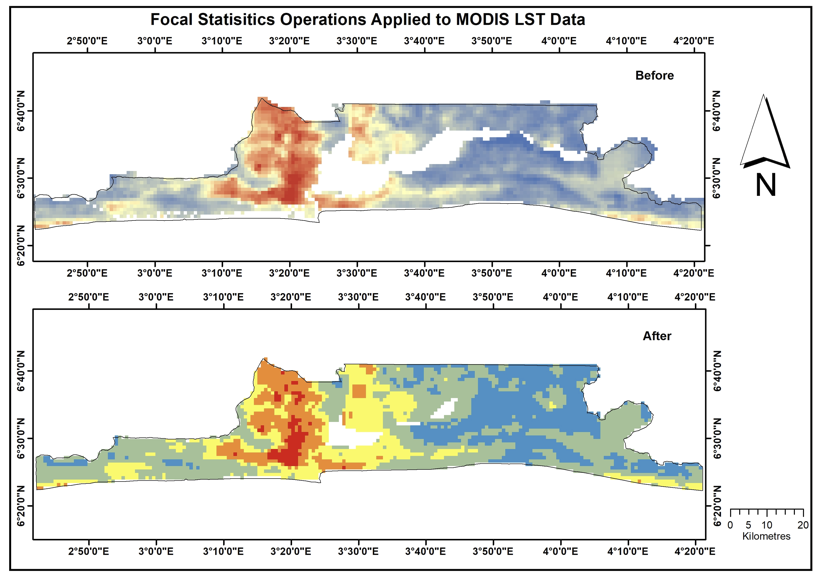
MODIS imagery contained missing values caused primarily by cloud contamination. Focal Statistics was applied to interpolate missing pixels and improve the continuity of the land surface temperature dataset before seasonal analysis.
Results
Land Surface Temperature
years = list(range(2013, 2023))
rainy_season = pd.DataFrame({
"year": years,
"lst_max": [31.75, 33.92, 32.48, 33.57, 33.86, 32.21, 33.11, 33.07, 33.24, 30.89],
"lst_min": [22.13, 20.44, 20.23, 21.89, 9.29, 16.03, 21.90, 22.10, 20.93, 18.22],
"lst_mean": [25.41, 25.50, 25.22, 26.55, 25.04, 25.26, 25.91, 26.48, 26.47, 24.76],
})
dry_season = pd.DataFrame({
"year": years,
"lst_max": [31.30, 31.24, 30.96, 30.74, 31.15, 31.66, 32.49, 31.53, 31.96, 31.79],
"lst_min": [23.24, 23.38, 23.47, 22.65, 23.72, 23.91, 23.97, 23.90, 24.16, 23.79],
"lst_mean": [26.03, 26.37, 26.13, 26.47, 26.74, 26.84, 27.16, 26.88, 27.18, 27.12],
})
rainy_season.head()
Summary statistics
rainy_season[["lst_max", "lst_min", "lst_mean"]].describe()
dry_season[["lst_max", "lst_min", "lst_mean"]].describe()
2013
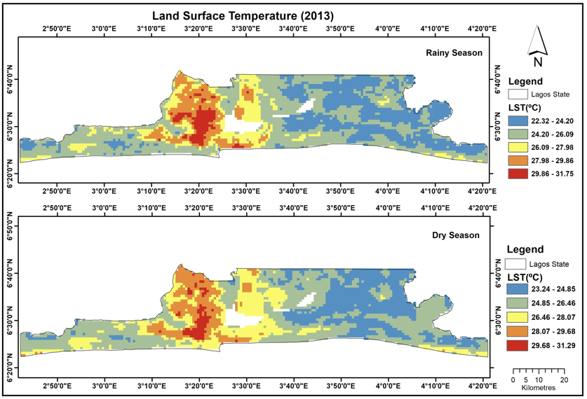
2022
The analysis showed a clear increase in the spatial extent of higher land surface temperatures between 2013 and 2022, particularly across highly urbanised areas.
Temperature Trends
fig, ax = plt.subplots(figsize=(10, 4))
ax.plot(rainy_season["year"], rainy_season["lst_mean"], marker="o", label="Rainy Season Mean LST", color="steelblue")
ax.plot(dry_season["year"], dry_season["lst_mean"], marker="s", label="Dry Season Mean LST", color="coral")
ax.set_title("Mean Land Surface Temperature by Season (2013–2022)", fontsize=14, fontweight="bold")
ax.set_xlabel("Year")
ax.set_ylabel("LST (°C)")
ax.legend()
ax.grid(axis="y", linestyle="--", alpha=0.5)
plt.tight_layout()
plt.show()
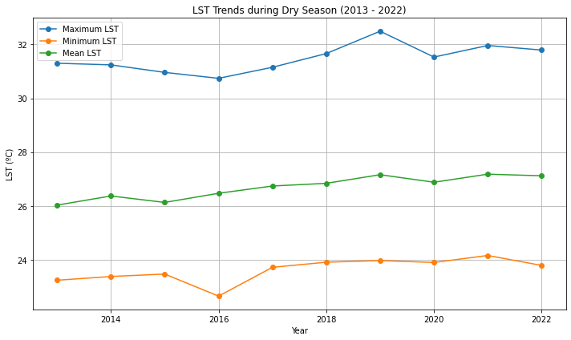
Seasonal trend analysis demonstrated:
- Increasing dry-season temperatures.
- Relatively stable rainy-season temperatures.
- Persistent Urban Heat Island intensity throughout the study period.
Rainy Season Analysis
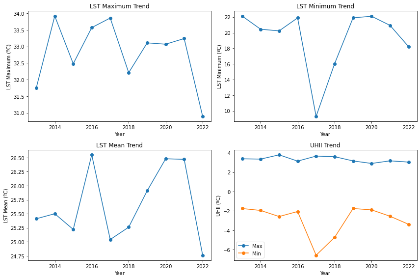
The rainy season exhibited lower average land surface temperatures but continued to display pronounced spatial variation across the study area.
Nitrogen Dioxide Analysis
no2 = pd.DataFrame({
"year": years,
"no2_dry_mean": [1.55, 1.41, 1.71, 1.80, 1.70, 1.76, 1.64, 1.64, 1.65, 1.62],
"no2_rainy_mean": [1.10, 1.07, 1.07, 1.12, 1.02, 1.09, 1.09, 0.94, 1.04, 1.04],
})
no2.head()
NO₂ Distribution (2013)
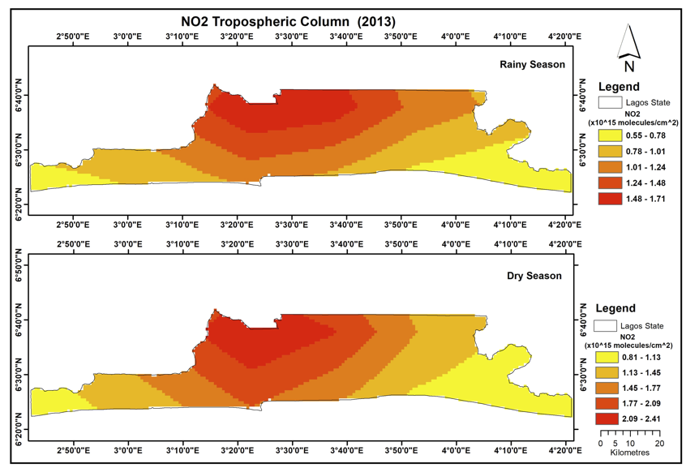
NO₂ Distribution (2022)
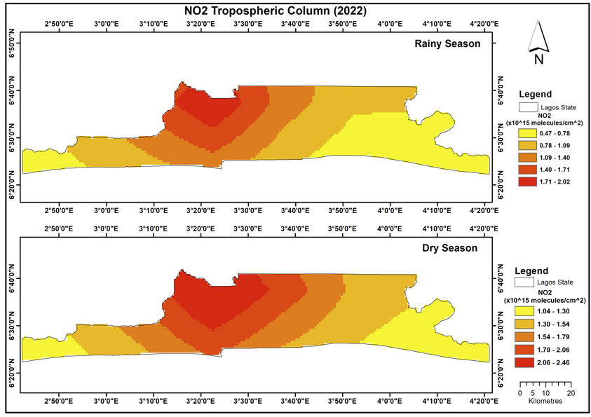
NO₂ concentrations remained highest within densely urbanised regions and major transport corridors.
NO₂ Trends
fig, ax = plt.subplots(figsize=(10, 4))
ax.plot(no2["year"], no2["no2_dry_mean"], marker="o", label="Dry Season", color="steelblue")
ax.plot(no2["year"], no2["no2_rainy_mean"], marker="s", label="Rainy Season", color="coral")
ax.set_title("NO2 Tropospheric Column Concentrations (2013–2022)", fontsize=14, fontweight="bold")
ax.set_xlabel("Year")
ax.set_ylabel("NO2 Concentration (10^15 molecules/cm^2)")
ax.legend()
ax.grid(axis="y", linestyle="--", alpha=0.5)
plt.tight_layout()
plt.show()
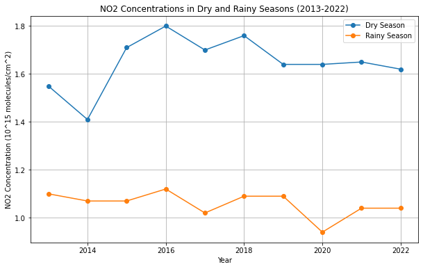
Time-series analysis highlighted seasonal variability while showing that pollution hotspots remained spatially consistent over the study period.
Land Use / Land Cover Change
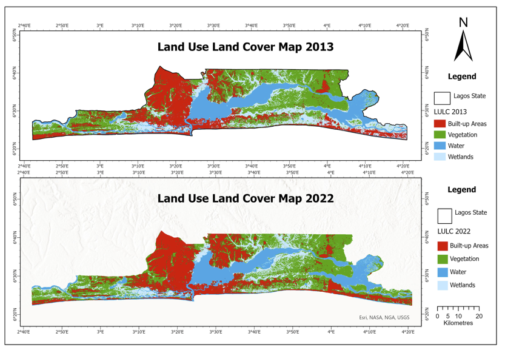
Comparison of 2013 and 2022 classifications revealed:
- Expansion of built-up areas.
- Reduction in wetland extent.
- Changes in vegetation distribution associated with urban growth.
Population Exposure
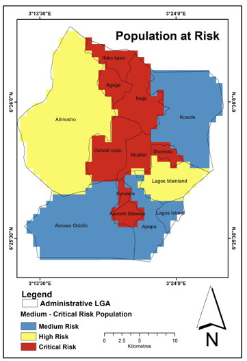
Environmental indicators were integrated with population data to identify Local Government Areas where high temperatures and elevated NO₂ concentrations coincided with greater population exposure.
Key Findings
- Analysed ten years of satellite-derived environmental data (2013–2022).
- Identified increasing land surface temperatures across urban areas.
- Detected substantial land-use change driven by urban expansion.
- Mapped spatial distribution of NO₂ concentrations.
- Identified Local Government Areas with elevated environmental risk.
- Produced decision-support maps suitable for urban planning and environmental management.
Skills Demonstrated
Remote Sensing
GIS
ArcGIS Pro
Python
ArcPy
Raster Analysis
Spatial Statistics
Land Surface Temperature
NO₂ Analysis
MODIS
Landsat
Cartography
Environmental Modelling
Scientific Research